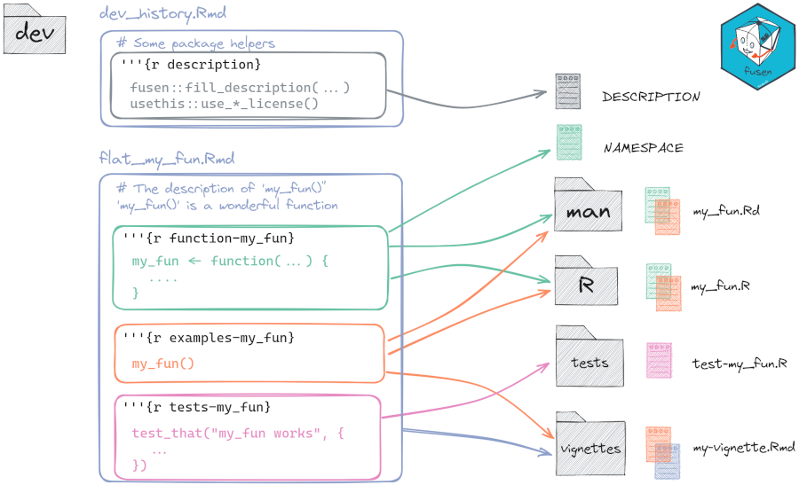

{fusen} inflates a Rmarkdown file to magically create a package.
If you know how to create a Rmarkdown file, then you know how to build a package.

Fill the flat Rmd (or qmd) template with everything in one place and {fusen} will inflate the identified parts in the correct package files and directories.
The {fusen} Rmarkdown template encourages users to fill their documentation and tests at the same time of writing their functions code. Thanks to the R package structure used by {fusen}, you can built a robust workflow or R package. {fusen} simplifies and reduces the number of steps towards a full R package.
After that, your {pkgdown} documentation website is one command away to be shared with all your users.
This {fusen} package is a real-world example of {fusen} use as it was itself created from the flat templates available in "dev/" folder in its GitHub repository.
Installation
You can install the released CRAN version:
install.packages("fusen")Full documentation for the CRAN version is here: https://thinkr-open.github.io/fusen/
You can install the development version of {fusen} from GitHub:
# From r-universe.dev (No need for GITHUB_PAT)
options(repos = c(
thinkropen = "https://thinkr-open.r-universe.dev",
CRAN = "https://cloud.r-project.org"
))
# Download and install {fusen} in R
install.packages("fusen")
# With {remotes} using GitHub API - Need for GITHUB_PAT
# install.packages("remotes")
remotes::install_github("ThinkR-open/fusen")Full documentation for the development version is here: https://thinkr-open.github.io/fusen/dev/
You are one Rmd away from building a package!
{fusen} is all about correctly separating and naming chunks.
- Create a new directory / new project with
- RStudio template: File > New Project > New directory > Package using {fusen}

- RStudio template: File > New Project > New directory > Package using {fusen}
- Choose the template
- Choose the template
teachingthe first time to see how {fusen} works, - Choose the template
fullthe second time to answer most of your questions
- Or command line:
create_fusen("path/to/new/project", template = "teaching")
- Choose the template
- Open the “dev/flat_teaching.Rmd” to start setting up the package
- In this flat Rmd template, run the first chunks named
descriptionasking to describe your package and license it- They look like these lines of code:
fill_description(fields = list(Title = "My Awesome Package"))
usethis::use_mit_license("John Doe")- Write your analysis and functionalities following the Rmd template
- You probably develop them with a few examples and tests
- For the first time, you can let the code as is, this is already the content for a working package
- Run the following code to transform the flat Rmd as an inflated package
- This will open the vignette created
fusen::inflate(
flat_file = "dev/flat_teaching.Rmd",
vignette_name = "Get started",
check = TRUE
)- Share it on a website on GitHub
fusen::init_share_on_github()That’s it! You built a package! A documented and tested package!
You even have a website for it!
Let’s test it now:
- Install your package locally
remotes::install_local()- Restart your R session to clean environment
- You can restart your RStudio session to let appear the “Build” tab panel
- Test functions of your package
my.package::my_median(1:12)Description of the Rmd template
As I said earlier, this is all about using the correct split and name for your chunks.
- Follow the
"dev/flat_template.Rmd"template to write your documentation and build your functions and test your examples.- Chunk named
functiongets the code of a function - Chunk named
examplegets the code for examples of using the function. This will be used for function@examplesand will be kept for the vignette.- As chunk names should be unique in the future vignette, you can add function names like
example-myfunction,example-myotherfunction, …
- As chunk names should be unique in the future vignette, you can add function names like
- Chunk named
testsgets the code for unit testing - Chunk named
developmentgets the code for development purposes, usually only used once like {usethis} functions
- Chunk named
- Inflate the flat Rmd template to transform it as a package with functions, unit tests and the current Rmd transformed as a vignette. And check.
Note that the "flat*.Rmd" files created with templates full and teaching are indeed working examples that can directly be inflated.
You can also have a look at {squirrels.fusen} that has been built to present the method. Follow the commits: https://github.com/statnmap/squirrels.fusen/commits/main
How to maintain a {fusen}? Can I use {fusen} with old-way packages?
There is a dedicated vignette to answer this: https://thinkr-open.github.io/fusen/articles/Maintain-packages-with-fusen.html
- Option 1: Modifications are only added to the “flat_template.Rmd” file, which then is inflated to update all packages files
- Option 2: Modifications are realized in the package files directly, and the “flat_template.Rmd” file must be protected from any use.
Advice : Use git as soon as possible, this will avoid losing your work if you made some modifications in the wrong place
Who is {fusen} for?
When you write a Rmarkdown file (or a vignette), you create a documentation for your analysis (or package). Inside, you write some functions, you test your functions with examples and you maybe write some unit tests to verify the outputs. This is even more true if you follow this guide : ‘Rmd first’: When development starts with documentation After that, you need to move your functions and scripts in the correct place. Let {fusen} do that for you!
{fusen} is first addressed to people who never wrote a package before but know how to write a Rmarkdown file. Understanding package infrastructure and correctly settling it can be frightening. This package may help them do the first step!
{fusen} is also addressed to more advanced developers who are fed up with switching between R files, tests files, vignettes. In particular, when changing arguments of a function, we need to change examples, unit tests in multiple places. Here, you can do it in one place. No risk to forget one. Think also about code review: everything related to one function is at the same place.
Q&A : All tips and tricks of a {fusen} template
- Can I be lazy in names used?
- Can I knit the content of the flat template ?
- How to declare packages with library() for the future vignette ?
- How to include examples that cannot be run ?
- Document your internal datasets in a function chunk as usual
- How to ignore some chunks ?
- How to create a vignette with different title and Index Entry?
- How not to create a vignette ?
- How to get a pre-filled template for a specific function name ?
- How to Inflate multiple flat files ?
- How to store multiple functions in a unique R file ?
- How to read dataset that I usually put in “tests/testthat/” for my unit tests?
- Can I load all functions of the current flat file during development without having to
inflate()? - Can I inflate a Quarto qmd file?
=> See vignette Tips and Tricks: https://thinkr-open.github.io/fusen/articles/tips-and-tricks.html
Why is this package named {fusen} ?
A fusen is an origami. It is a flat piece of paper that you fold in a specific way so that at the end, you can magically inflate it to let a nice box appear.

Similarly, the {fusen} package uses a flat Rmd template, that you fill in a specific way so that at the end, you can magically inflate() it to let a nice package appear.
Click here to fold your {fusen}…

Acknowledgments
- Thanks to Deemah who asked me to go further ‘Rmd first’ after my presentation at useR 2019 in Toulouse: ‘The “Rmd first” method: when projects start with documentation’ (Video on Youtube: https://youtu.be/cB1BCxFbhtk).
- Thanks to @rundel and its package {parsermd} who helped me get back in this project with ease : https://github.com/rundel/parsermd
- Thanks to the ThinkR team who adopted this package for its daily production.
Code of Conduct
Please note that the {fusen} project is released with a Contributor Code of Conduct. By contributing to this project, you agree to abide by its terms.